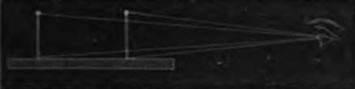

Accommodation Of The Eye To Distances
Description
This section is from the book "Wonders Of The Human Body", by Auguste Le Pileur. Also available from Amazon: Wonders of the Human Body.
Accommodation Of The Eye To Distances
When we make use of the camera obscura, in order that the image may be distinct the screen must be placed in the focus of the instrument, that is at the point where all the rays refracted by the objective converge. If the objects recede or approach, the screen must be placed at a proportionate distance from the object-glass, so that its surface may correspond to the apices of the refracted luminous cones. And yet we see with equal distinctness the images of objects at very unequal distances, without any variation in the form of the eye, or the relative conditions of its media, or at least without our consciousness of anything but a scarcely perceptible effort This power of accommodation of the eye has long been the subject of investigation, and the question is not yet settled. The most generally received explanation is, that in order to see objects at different distances, and especially very near to the eye, it modifies its form, or that of its media, and adapts itself to the distance in such a manner, that the retina is always in the focus. According to some authors, the length of the axis of the eye varies, the retina approaching or receding from the crystalline. Others maintain that it is the crystalline which changes its place, or that the curves of the refracting media modify themselves in such a manner, as always to make the apices of the luminous cones coincide with the immovable retinal surface. This theory of adaptation or accommodation is denied by some eminent savants, though a few of them approach it in attributing this phenomenon to the contraction and dilatation of the pupil; while others have endeavoured to demonstrate that the distance of objects from the eye may vary to a great extent, without the image undergoing any appreciable modification.
Helmholtz maintains that the anterior surface of the crystalline increases in convexity in looking at objects near at hand, and flattens when looking at a distance; the pupil contributes also to the accommodation by contracting in looking at objects near at hand, and dilating to see at a great distance. Nothing positive is known regarding the manner in which this change of form in the crystalline is effected. M. Helmholtz inclines to the opinion that the diameter of the lens is increased or diminished, and consequently it becomes more convex, or more flattened, according as the zone of Zinn, which is inserted into the crystalline capsule, is distended or relaxed by the action of the ciliary.
Some simple experiments prove that the eye cannot see distinctly, without an effort of adaptation, two objects placed at unequal distances, and that the image distinctly perceived by the retina when placed in the focus, is so no longer when the focal distance is changed.
If we look with one eye at the heads of two black pins, placed in a line at the same level, but at different distances, we shall see one of them distinctly and the other vaguely. If we look at the nearest one the image is perfectly clear, while the one farthest away is enveloped in mist; but if we look at the latter we see it easily without change of position, but when its image is well defined that of the other pin becomes confused.
Fig. 39. Accommodation of the eye to different distances.
2. In looking at a pin through a small hole pierced in a card, we can see either the pin or the edge of the hole distinctly; but when the image of one is distinct the other is.
3. By making two pin-holes through a card, at a distance less than the diameter of the pupil, that is, not more than one-twelfth of an inch from each other, then look through these two apertures at a small object on a bright ground, at a black point, for example, on a sheet of white paper. At a certain distance the point is single, but if the head be moved back-ward or forward it will appear double.
In the first two experiments the eye is compelled to adapt itself to the distance, in order to see distinctly and successively two objects at unequal distances, and of which the images are not distinct, except when the apex of the cones formed by the refracted rays of light exactly corresponds to the surface of the retina, that is, when the retina is exactly in the focus. And also, the experiment of looking through a pierced card at an object, and seeing it distinctly, that is, looking at it through an immovable artificial pupil, seems to prove that the movements of the pupil are not necessary to accommodation.
The third experiment proves, that in order to see a single image the retina must be in focus. In this case, in fact, the rays coming from the external object converge and meet on the same retinal divisions, hence there is but a single sensation ; if the eye approaches or recedes, they reach the retina either before their convergence is effected, or not until, having converged, they cross each other, and diverge beyond the focus, in either case in such a manner as to fall upon different divisions of the retina, and in consequence produce a double sensation.
The accommodation of the eye therefore seems to be in contestable, in spite of the want of accord in the opinions savants upon its mechanism. A very little attention enable us to recognize the effort which accompanies it, especially the adaptation is prolonged without variation at a short distance, as in looking through a microscope. Then, in the eye loses sometimes for several hours the faculty adapting itself to great distances; it becomes myopic for certain time. Persons who are in the habit of using a for one eye, as watchmakers and engravers for example, are generally myopic in that eye; and this effect is very marked in infants, who acquire the habit of looking at objects near at hand. Short-sightedness is thus much more common in towns than in the country. Sailors, mountaineers, and inhabitants of deserts are generally very long-sighted; the habit of looking at great distances doubtless develops this faculty.
Continue to: